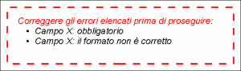

Lo stdMessagePanel è un pannello di tipo informativo utilizzato per mostrare all'utente eventuali messaggi di errore o informativi. Se, durante l'elaborazione, si verificano degli errori oppure se la business logic inserisce dei messaggi informativi il pannello mostra tali messaggi. Se invece non si verifica almeno una di queste due condizioni, il pannello non ha nessuna evidenza grafica. Le tipologie di messaggio visualizzabili sono:
| cod. | nome | descrizione |
|---|---|---|
| apparenza grafica | ||
| PERR001 | messaggi informativi | Permette la visualizzazione di messaggi di tipo informativo |
| PERR002 | messaggi errore campi | Permette la visualizzazione di messaggi di errore relativi a specifici campi della schermata |
| PERR003 | messaggi errore globali | Permette la visualizzazione di messaggi di errore relativi all'intera schermata |
| PERR004 | invisibile in assenza messaggi | Viene automaticamente nascosto in caso non vi siano messaggi di alcun tipo da visualizzare |
| PERR005 | appare in popup | Appare in una finestra di popup |
| PERR006 | appare in schermata | Appare nella schermata nel punto in cui è posizionato il pannello |
|  |
| esempio di standard message panel |
Nella tabella seguente è riportato il grado di implementazione delle varie caratteristiche/funzioni dell'elemento StdMessagePanel nelle differenti implementazioni.
| cod | feature | guigen | |||
|---|---|---|---|---|---|
| 1.5.0 | 1.6.0 | ||||
| neutral-base | neutral-arricchita | neutral-base | neutral-arricchita | ||
| apparenza grafica | |||||
| PERR001 | messaggi informativi |  |
|
|
|
| PERR002 | messaggi errore campi | |
|
|
|
| PERR003 | messaggi errore globali | |
|
|
|
| PERR004 | invisibile in assenza messaggi | |
|
|
|
| PERR005 | appare in popup |  |
|
|
|
| PERR006 | appare in schermata | |
|
|
|